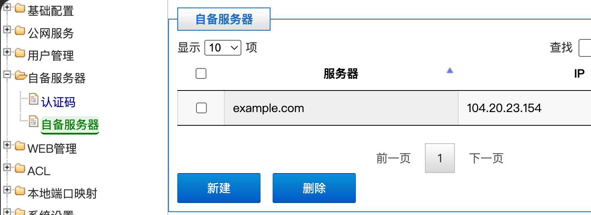

可以将您自己的服务器添加到此处。
客户端会自动到自建服务器上去认证，认证通过后，会将其加入到公网节点列表。
配置路径: "自建服务器-服务器"

配置视图： config-view -> xnetc-view
使用示例:
xnetc-view>self public node 1.2.3.4 xnetc-view>no self public node 1.2.3.4
命令说明:
| self public node %SERVER | 添加一个服务器 |
| no self public node %SERVER | 删除一个服务器 |